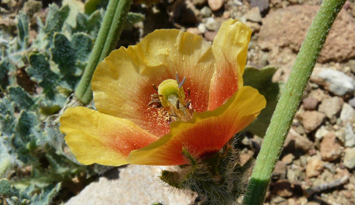
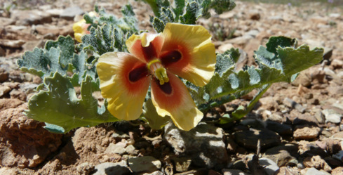
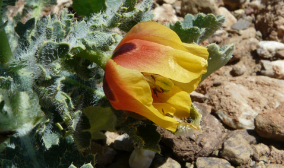
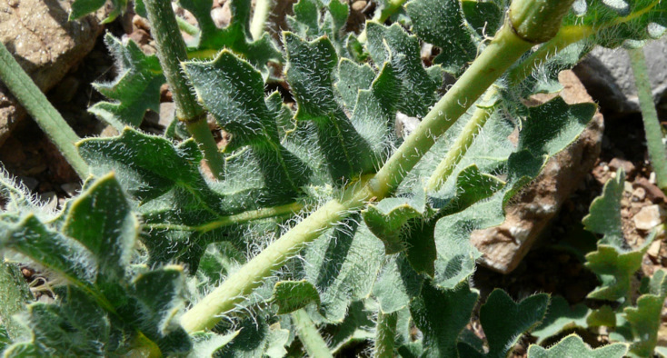
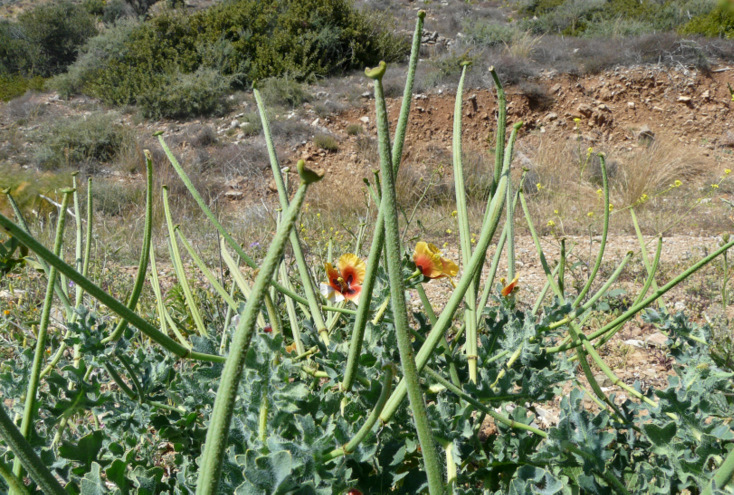
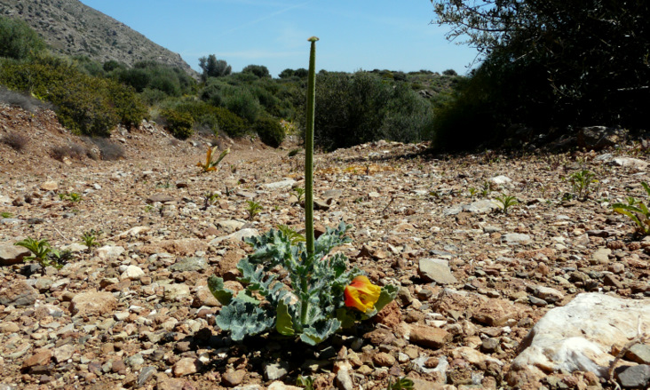
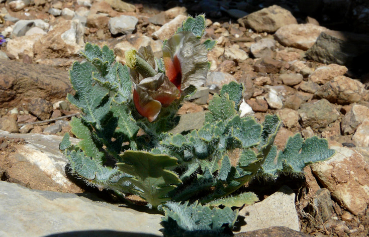
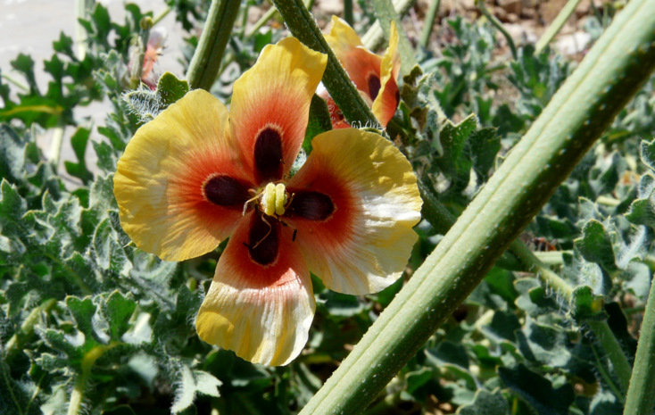

| PHRYGANA | Fauna | Flora | additions nouveautés |
espèces species |
contact-commentaires-info:
phrygana1 (at) gmail.com |
| diversité crétoise -- Cretan diversity | |||||
| Glaucium corniculatum (L.) RUDOLPH subsp. corniculatum |
| 161 | Flora | PAPAVERACEAE | Glaucium |
|
 Glaucium corniculatum subsp. corniculatum Agios Pavlos 05 avril 2010 |
| en: Red horned poppy | |
| Feuilles: poilues, embrassantes, oblongues, ondulées, pennatilobées, à lobes pointus, vert bleu grisâtre | |
| Tige: dressée, poilue | |
| Fleurs: solitaires, assez grandes (30 - 50 mm), à pétales jaune orangé à rouge jaunâtre, rarement jaunes, souvent avec la base brun noir. Les sépales sont entièrement libres, avec des poils épars. | |
| Anthères: jaunes à jaune orangé; filet jaune orangé | |
| Fruit: une silique très allongée (110 - 200 mm), à deux loges, droite, se rétrécissant subitement au sommet, poilue | |
| Hauteur: 10 - 30 cm | Type biologique: hémicryptophyte (bisannuel) |
| Floraison: mars avril mai | Altitudes: 0 - 200 m |
| Statut en Crète: indigène -- native | |
| Biotopes en Crète: phrygana, lieux rocailleux, bords de chemins, garrigue, zones côtières | |
| Distribution: Europe méridionale, Asie mineure | |
  Glaucium corniculatum subsp. corniculatum Agios Pavlos 05 avril 2010 |
 Glaucium corniculatum subsp. corniculatum Agios Pavlos 05 avril 2010 |
|
 Glaucium corniculatum subsp. corniculatum Agios Pavlos 05 avril 2010 |
|
 Glaucium corniculatum subsp. corniculatum Agios Pavlos 05 avril 2010 |
|
 Glaucium corniculatum subsp. corniculatum Agios Pavlos 05 avril 2010 |
|
 Glaucium corniculatum subsp. corniculatum Agios Pavlos 05 avril 2010 |
| 19 août 2010 |
| © paul fontaine -- © Phrygana.eu 2007 -- 2013 |